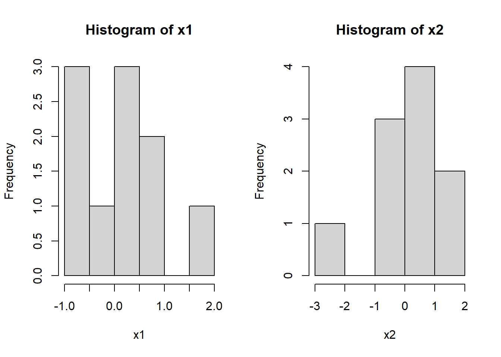
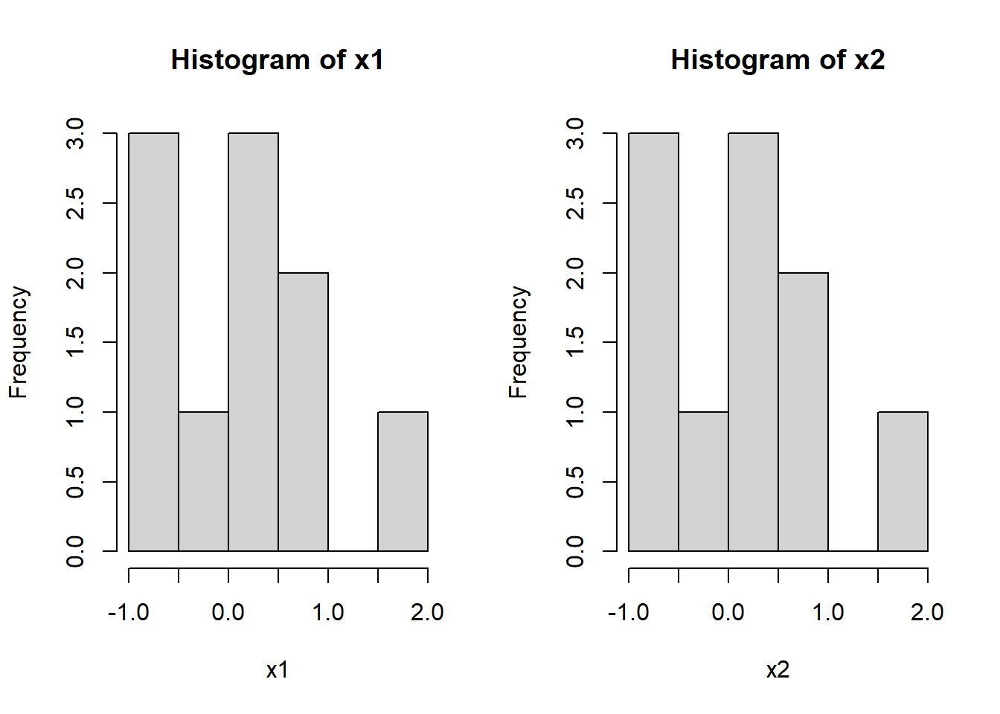

Chapter 11 Random seeds
11.1 What is a random seed?
Computers tend not to use truly random numbers. Instead they use algorithms called pseudorandom number generators (PRNGs) to produce ‘pseudorandom’ numbers.
PRNGs are deterministic algorithms which produce sequences of numbers which have many of the same statistical properties as truly random sequences. They tend to work iteratively, the algorithm has a ‘hidden state’ which acts as an input to a complex transformation to produce an output, each time this occurs the hidden state is updated so that at the next step the algorithm will produce a different output.
Because they are deterministic if the algorithm is in same state and receives the same input it will produce the same output. This can be a very useful property as often we would like to write some code which uses random numbers but we want to produce the same output every time we run it.
The seed of a PRNG is a way of determining the starting value of the hidden state. Ordinarily these algorithms will take their seed from a source which is constantly changing, such as the computers clock time, which ensures that each time you produce random numbers they will be different. However we have the option to manually provide a seed to set the initial state.
In R this is done with set.seed(n).
11.2 Simulations
If we simulate and visualise two sets of gaussian data we can see that they are different as we might naturally expect.

This is because after producing the first set of data our PRNG is no longer in the state specified by set.seed(1) and so the second call to rnorm() will be receive new random numbers and therefore it will be different.
If however, we reseed the algorithm after producing the first dataset we will produce exactly the same set of pseudorandom numbers:
# Set random seed to 1.
set.seed(1)
x1 <- rnorm(10)
# Reset the random seed to 1.
set.seed(1)
x2 <- rnorm(10)
# Plot
par(mfrow=c(1,2))
hist(x1)
hist(x2)
Note the changes in the state of the PRNG only occur when it is used to produce our pseudorandom numbers. Therefore producing 10 gaussian samples with rnorm(10) is equivalent to sequentially producing two sets of 5 samples with rnorm(5) and combining them:
# Sample all 10 in one command.
set.seed(1)
x1 <- rnorm(10)
# Sample two sets of 5 sequentially.
set.seed(1)
y1 <- rnorm(5)
y2 <- rnorm(5)
x2 <- c(y1,y2)
# Plot
par(mfrow=c(1,2))
hist(x1)
hist(x2)
It doesn’t matter what code was used to produce the random numbers, what is important is the state of the PRNG ‘under the hood’.
This can lead to some slightly unexpected behaviour which we will briefly look at below.
First lets simulate a sequence of numbers from a uniform distribution between 0 and 1, \(U(0,1)\):
## [1] 0.2655087 0.3721239 0.5728534 0.9082078 0.2016819When we precede this operation by simulating a single uniformly distributed number it will shift our sequence one forward, the second element moving to the first, the third to the second and so on, with a new number taking the 5th position:
set.seed(1)
seq1 <- runif(5)
set.seed(1)
ignore <- runif(1)
seq2 <- runif(5)
df <- data.frame(Seq1=c(seq1,NA),Seq2=c(NA,seq2))
knitr::kable(df,digits=3,row.names=TRUE)| Seq1 | Seq2 | |
|---|---|---|
| 1 | 0.266 | NA |
| 2 | 0.372 | 0.372 |
| 3 | 0.573 | 0.573 |
| 4 | 0.908 | 0.908 |
| 5 | 0.202 | 0.202 |
| 6 | NA | 0.898 |
If we peek at the number we discarded we will see that, as we might have expected, it corresponds to the first element of our original sequence:
## [1] 0.2655087So far so good.
However what will happen if, instead of a uniformly distribution variable, we simulate from a gaussian?
set.seed(1)
seq1 <- runif(5)
set.seed(1)
ignore <- rnorm(1)
seq2 <- runif(5)
df <- data.frame(Seq1=c(seq1,rep(NA,2)), Seq2=c(rep(NA,2),seq2))
knitr::kable(df,digits=3,row.names=TRUE)| Seq1 | Seq2 | |
|---|---|---|
| 1 | 0.266 | NA |
| 2 | 0.372 | NA |
| 3 | 0.573 | 0.573 |
| 4 | 0.908 | 0.908 |
| 5 | 0.202 | 0.202 |
| 6 | NA | 0.898 |
| 7 | NA | 0.945 |
This time our samples have been shifted two positions forward! What is going on?
The answer is a little out of the scope of this tutorial and is highly dependent on what algorithms are being used ‘under the hood’.
The key lesson from this is that in practice it is very hard to keep track of the internal state of the PRNG. This is important as an analyses might only be reproducible if the PRNG is in exactly the same state when random number are used. Say you have two similar analysis scripts and you want some key algorithms inside to use the same pseudorandom numbers (for example you might want your tSNE plots to be reproducible). It is not sufficient to set the same random seed at the top of the script as it is all too easy to inadvertantly create a divergence in the hidden state of the PRNG in the two scripts. Therefore it is best to reseed the random number generator just before the relevant code and to ensure that any intervening operations are identical.
11.3 Box-Muller transform
Box-Muller transform converts takes \(U_1, U_2 \sim U(0,1)\) and converts them to a point in polar coordinates \(R^2 = -2 \ln U_1\), \(\Theta = 2\pi U_2.\) taking the \(X\) and \(Y\) coordinates of this point gives two independent normally distributed variables.
Thus it produces normal random numbers in pairs, producing a single random variable progresses the state of the PRNG the same amount as producing two:
RNGkind(normal.kind="Box-Muller")
set.seed(1)
seq1 <- runif(5)
set.seed(1)
ignore <- rnorm(1)
seq2 <- runif(5)
set.seed(1)
ignore <- rnorm(2)
seq3 <- runif(5)
seq1## [1] 0.2655087 0.3721239 0.5728534 0.9082078 0.2016819## [1] 0.5728534 0.9082078 0.2016819 0.8983897 0.9446753## [1] 0.5728534 0.9082078 0.2016819 0.8983897 0.9446753RNGkind(normal.kind="default")
set.seed(1)
seq1 <- runif(5)
set.seed(1)
ignore <- rnorm(1)
seq2 <- runif(5)
set.seed(1)
ignore <- rnorm(2)
seq3 <- runif(5)
seq1## [1] 0.2655087 0.3721239 0.5728534 0.9082078 0.2016819## [1] 0.5728534 0.9082078 0.2016819 0.8983897 0.9446753## [1] 0.2016819 0.8983897 0.9446753 0.6607978 0.6291140